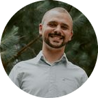

|  |
Diego do Carmo BadelliEngenheiro de processos na Furukawa Electric LatAm Engenheiro Eletricista pós-graduado em Gestão Industrial com sólida experiência em desenvolvimento de produtos e processos. |
| Engenharia Industrial Elétrica, Ênfase em Eletrotécnica (2009 - 2014) | UTFPR - Universidade Tecnológica Federal do Paraná |
| Engenharia Elétrica, Energia e meio ambiente (2012 - 2013) | Université de Technologie de Belfort-Montbéliard |
| MBA em Gestão Industrial, Pós Graduação (2018 - 2019) | Faculdades da Indústria - IEL |
| GBA Fundamentos de Gerenciamento de Projetos (2018 - 2018) | Fundação Getulio Vargas |
Furukawa
Engenheiro de Processos
Janeiro de 2017 - Atual (5 anos 2 meses)
Curitiba, Paraná
Renault do Brasil / Soditech
Analista de Desenvolvimento de Produtos
Setembro de 2014 - Dezembro de 2016 (2 anos 4 meses)
São José dos Pinhais, Paraná
Volvo Bus Corporation
Estágio em Engenharia de Vendas
Agosto de 2013 - Agosto de 2014 (1 ano 1 mês)
Curitiba, Paraná
| The Complete 2022 Web Development Bootcamp - Dr. Angela Yu - Udemy | ⭐⭐⭐⭐ |
| Programação para todos (Primeiros passos no Python) - University of Michigan | ⭐⭐⭐⭐⭐ |
| Programação em R - The R Project for Statistical Computing | ⭐⭐⭐⭐ |
| Treinamento corporativo de Oratória - Escola Conquer | ⭐⭐⭐⭐⭐ |
| Criatividade e Resolução de Problema - Escola Conquer | ⭐⭐⭐⭐⭐ |
| Inteligência Emocional - Escola Conquer | ⭐⭐⭐⭐⭐ |
| Microsoft Power BI para Data Science - Data Science Academy | ⭐⭐⭐⭐ |